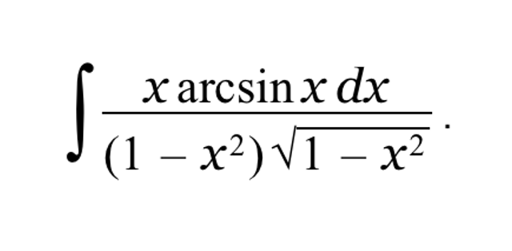

Вопрос 7 из 7

Решите интеграл:
\( \ln|1 - x^2| \cdot \arcsin x + C \)
\( \frac{x \arcsin x}{\sqrt{1 - x^2}} + C \)
\( \frac{\arcsin x}{\sqrt{1 - x^2}} + \frac{1}{2} \ln \frac{1 - x}{1 + x} + C \)
\( \frac{\arctan^2 x}{2} + C \)
\( \sqrt{1 - x^2} \cdot \arcsin x + C \)
\( e^{\arcsin x} \cdot \sqrt{1 - x^2} + C \)
Тык!
Коши в деле